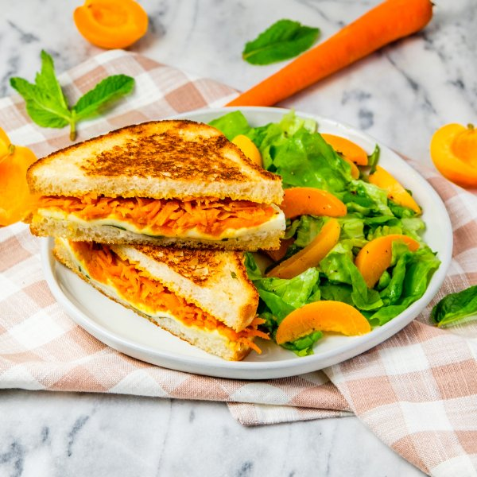

Indian-Spiced Grilled Cheese with Carrot Chutney & Apricot-Mint Salad

Total Time
35 min
Nutrition (per serving)
690 kcalCalories
27.1 gProtein
80.2 gCarbs
29.9 gFat
Full nutrition table
| Calories | 690 kcal |
| Total fat | 29.9 g |
| Saturated fat | 10 g |
| Trans fat | 0.3 g |
| Cholesterol | 44.8 mg |
| Sodium | 1093.5 mg |
| Carbohydrates | 80.2 g |
| Fiber | 6.1 g |
| Sugars | 20.2 g |
| Protein | 27.1 g |
| Potassium | 633.7 mg |
| Calcium | 409.3 mg |
| Iron | 6.8 mg |
| Vitamin A | 410.6 IU |
| Vitamin C | 10.7 mg |
| Vitamin D | 9.1 IU |
Cookware
Ingredients
- 4apricots
- 1 headbutter (Boston) lettuce
- 4 mediumcarrots
- 1 small pkgfresh mint
- 1 (8 oz) pkgfresh mozzarella cheese
- 8 slicessourdough bread
- black pepper
- brown sugar
- cumin, ground
- extra virgin olive oil
- garam masala
- salt
- white wine vinegar
Steps
- Wash and dry the fresh produce.4 medium carrots
4 apricots
1 small pkg fresh mint
1 head butter (Boston) lettuce - Peel, trim, and coarsely grate carrots. Place in a medium saucepan.
- Add water, vinegar, sugar, and spices to the pan with the carrot. Bring to a boil over medium-high heat. Once boiling, reduce heat to medium-low and simmer, stirring occasionally, until carrots are soft and most of the liquid has evaporated, about 10 minutes. Remove chutney from heat.¼ cup water
¼ cup white wine vinegar
2 tbsp brown sugar
1 ½ tsp garam masala
½ tsp cumin, ground
½ tsp salt - Meanwhile, place oil, vinegar, salt, and pepper in a medium bowl. Whisk to combine the dressing.4 tsp extra virgin olive oil
2 tsp white wine vinegar
½ tsp salt
¼ tsp black pepper - Halve apricots lengthwise (around the pit); twist halves to separate, then remove and discard pits. Cut each half into thin slices and add to the bowl with the dressing.
- Pick mint leaves off the stems; discard stems and roughly chop the leaves. Add half to the bowl with the dressing and set aside. (Reserve remaining mint for the sandwiches.)
- Slice mozzarella into thin rounds.1 (8 oz) pkg fresh mozzarella cheese
- When the carrot chutney is done, preheat a large skillet over medium-high heat.
- While the skillet heats up, place the bread slices on a flat surface. Layer mozzarella, chutney, and reserved mint over half of the slices, then cover sandwiches with the remaining bread slices.8 slices sourdough bread
- Once the skillet is hot, add oil and swirl to coat the bottom. Working in batches if necessary, place sandwiches in the skillet and cook until the bottoms are golden brown, 2-4 minutes.4 tsp extra virgin olive oil
- Remove the sandwiches to a plate and add more oil to the skillet. Return sandwiches to the skillet, browned-side up, and cook until golden brown on the other side and the cheese is melted, 2-4 minutes more. Once done, transfer to a cutting board and slice in half.4 tsp extra virgin olive oil
- Meanwhile, chop or tear lettuce into bite-sized pieces. Add to the bowl with the dressing and apricots, then toss to combine the salad.
- To serve, divide salad and sandwiches between plates. Enjoy!